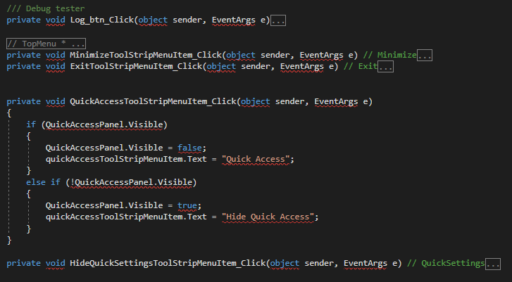

C# Programming Language

| Language | syntax | link | symbol | defination |
|---|---|---|---|---|
C# Programming Language |
 | C# | |
| Paradigm | Designed by | First appeared | Stable release | Filename extensions | Typing discipline |
|---|---|---|---|---|---|
| Multi-paradigm: structured, imperative, object-oriented, event-driven, task-driven, functional, generic, reflective, concurrent | Microsoft | 2000; 21 years ago | 9.0[2] / November 10, 2020; 6 months ago | .cs, .csx | Static, dynamic strong, safe, nominative, partially inferred |